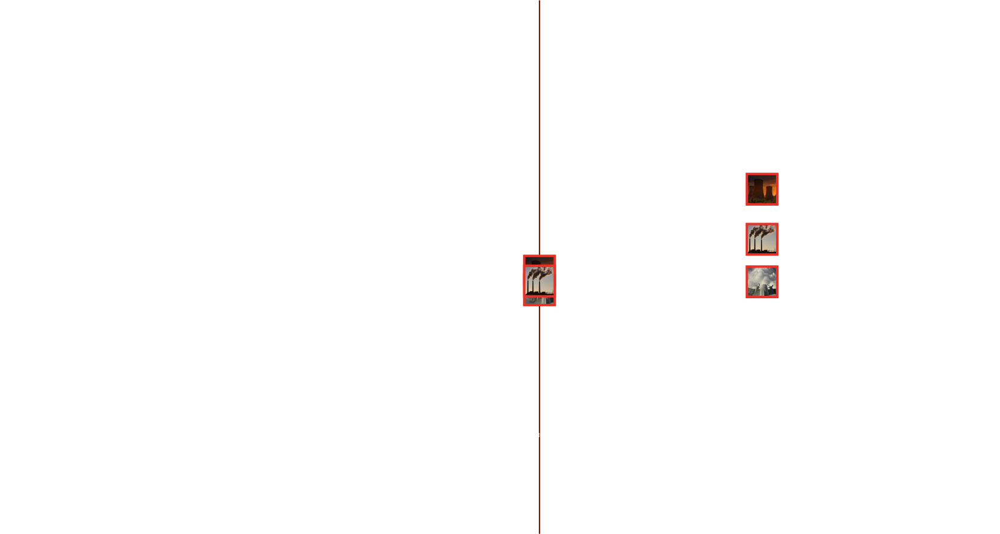

Introduction

In its Sixth Assessment Report, the IPCC forwards 5 “high confidence” predictions about the risks of climate related disasters:
- Climate change is already affecting weather in every region of the globe.
- Every increment of warming will intensify hazards.
- Climatic and non-climatic risks interact, creating cascading risks, which are more complex and harder to manage.
- Resilient development is enabled by cooperation, including access to financial resources, inclusive governance and coordinated policies.
- Adaptation and mitigation measures this decade Delayed action will lock-in high-emissions, raise risks of stranded assets and increase losses.
IPCC predictions are generated in part by simulations run on Integrated Assessment Models, which manipulate time to stage future interactions between complex systems. As the future unfolds, what comes to pass next will take the place of the present in the next run–herein lies the recursivity of simulation.
Although the IPCC lacks the tools to produce or negate the futures it scries in simulation, its foresight is significant. IPCC foresight is a germ of a planetary sapience, a self-responsibilization of our species against the backdrop of an otherwise certain doom.
The IPCC art of foresight is, however, not a transhistorical given. This simulative knack beckons backwards towards a recent reversal in the mechanics of predictive thought…
A History of Predictive Thought
From Laocoön and Cassandra to the Cults of Apollo to Sophoclean tragedy, the Hellenic future is destiny, it can be affirmed or negated, but never denied.
In time, the Hellenic strain of oracular thought was appropriated by monotheistic traditions, namely Jews and Christians who spoke in the oracular voice in “condemnation of cities and nations for the sins of idolatry, licentiousness, and a range of [other] vices.”
As Christendom took hold during the 1st century, “vivid portrayals of the end times and various eschatological conflagration” became a constant feature of the oracular mode.
So much was this the case that in Thessalonians, the Apostle Paul introduced the concept of the Katechon, or "that which withholds". The idea of the Katechon was that Christians ought not act as if the eschaton is imminent, because a katechonic restrainer holds back the chaos in the days before Christ’s return.
Worth remembering is that in Christian theology time is no ‘long march’ towards salvation but a waiting for two simultaneities to join--on the one hand, the historical present and the other, the eschaton, which is also the moment of redemption. The function of the Katechon is therefore to produce historical order in anticipation of this conjoinment.
From the rise of Christendomin the first century until the middle of the Enlightenment, predictive thought flows from this genre of anticipation. The future is out there; it may be a many-forked path, but it is determined and it may yet become known if only one learns proper techniques of its divination. Hence, this prophetic mode of thought could also be described as cryptographic.
From Prophetic to Post-Prophetic Thought
In the Enlightenment, a new strain of predictive thought is beginning to be born…
Following in the steps of Pascal, Leibniz, Laplace, and Bayes, statistics and probability come of age in the nineteenth century as the sciences of state, of population management, of economics and moral action.
What came as a result was a new understanding of causality. No longer was safety purchased by the long durees of prophecy and predestination against the randomness of the everyday, but now the statistical and probabilistic could rationalize the quotidian and the nearby.
Not for another 100 years, however, until technical power to act on behalf of statistical knowledge would become commensurate with the knowledge itself, would the ramifications of this inflection in foresight truly begin to be meted out.
In the post-war United States, massive military funding had accelerated technological innovation to the point where the methods and machines of foresight were commensurate in a unique way: enter the RAND Corporation. Born out of a joint project between the Airforce and the Douglas Aircraft company, RAND was a tripartite product of computer development, which provided the data processing capability required for simulating solutions to intractable problem; game theory, which provided the theoretical structure for the investigation of social interaction, and also US military's Cold War need for war game simulation models.”
What RAND did was standardize and operationalize the statistical and probabilistic inflections in predictive thought such that they would become the generic containers for conceiving political action.
Shorn of destiny, the RANDian post-prophetic mode of thought like its predecessor still wishes to stave off annihilation and claim victory. However, unlike the prophetic, these outcomes are for post-prophetic thought entirely contingent. Victory and defeat do not exist in advance, they are made.
Recall Karl Rove: “We’re an empire now, and when we act, we create our own reality”.
Corporations in particular benefit from the post-prophetic turn in predictive thought, for if the future is undetermined, the shareholder value that may be unlocked is unlimited. In this turn juncture, modern finance is born and scenario planning goes private as industry adopts Herman Kahn’s methods.
Post-Prophetic Thought's Present Reality
For the prophetic mode of thought, one or several futures arrive in the present from without. In the post-prophetic turn, the future is a contingent thing, we must make it or unmake it through so many ephemeral simulations: probabilistic modeling, weather forecasts, financial speculation & scenario planning.
Today, we are still manufacturing a Katechon, but in this secular world, there is no longer any redemption on the other side. The function of post-prophetic thought is to produce the future as an endless present as an endless attempt to manage the overwhelming totality of risk.
The present eschaton, climate change will test the post-prophetic turn: will this type of thinking be up to the task of producing strategies adequate to responding to climate change disaster?
Four Modes of Post-Prophetic Foresight
As post-prophetic scrying has become increasingly technically endowed, its deployments have proliferated. A novel typology presents four distinct modes of contingent foresight mapped across the worldly constraints of infrastructure, time horizon, decision protocols, and enforcement.
Four individual modes of post-prophetic foresight can be unbraided and examined before recombining them: they are: actuarial, resilience, interdiction and logistical.

Actuarial Foresight is the quantification of uncertainty and its conversion into financial risk. For example, insurance services. Actuarial risk calculation becomes automated governance insofar as it automatically polices the boundaries of safe interaction through tools like credit scores.
Resiliency Foresight concerns the last disaster and the disaster to come. In the wake of 9/11, Katrina and COVID-19, it appears a single event can quickly become global. Resiliency is about containing the space of crisis. For example, simulations of earthquakes by the E-Shake Table are used to project how buildings must be constructed to withstand future shakes.
Logistical Foresight is about planning how material flows. Amazon Freight is a case in point as is NVIDIA’s warehouse optimizer. Logistical foresight implies not only the coordination of supply chains according to consumer appetites but also to environmental needs.
Interdictional Foresight does not wait for threats to appear, it predicts, preempts, intercepts, and re-directs threats prior to their appearance, shaping the flow of events according to its wishes.
Simulating the Modes in Context of Climate Change
In responding to climate disasters, these four modes will necessarily overlap as systems previously thought independent will be shown to be intertwined. How might these methods of scrying become part of a framework for decision-making and governance at a global scale?
IPCC scenarios present humanity with a snapshot of its means of producing time. In their graphs, we peer through bifocals of time and ‘degrees celsius’ and see how actions undertaken in the present recursively recalibrate possible futures.
For the IPCC, simulational power resides with scientific accuracy. That is, the IPCCs powers of action are limited, but their epistemological weight is vast. These graphs are interventions at the level of foresight where predictive thought becomes an operation on the means of decision-making.
To judge its success, one considers the frequency of a simulations’ recursion between the model and the modeled: how often is the modeled entity impacted by the simulation? How quickly does the simulation integrate its own impact as a new input?
Which modes of foresight we prioritize in responding to the crises of climate change will in large part determine our future.
Implications
This simulational run is an operative exercise in the recursive production of the future, how modes of foresight bring variable futures about, and how to plan for those possibilities. Climate change disasters require multi-dimensional responses, to build that complexity, simulations must recur astride reality.
Ironically, although post-prophetic simulations have far more knowledge than their religious forebears, what mattered to prophetic thinkers was the known quality of the future, what matters to post-prophetic simulations are the unknowns: the spaces of ambiguity and the need for contingency plans.
If recursive climate simulations are about the constant discovery of new unknowns and their conversion into new knowns, are these simulations themselves not an inchoate form of geoengineering?
Conclusion
What were once theological visions of the future have today become a general symptomatology. Today, all life is staked to simulations. To turn off the simulation is therefore to turn off life…
Simulation addiction is the final destination of all recursion: the infinite regress of the moving image; the seductive mirage of the not yet real…